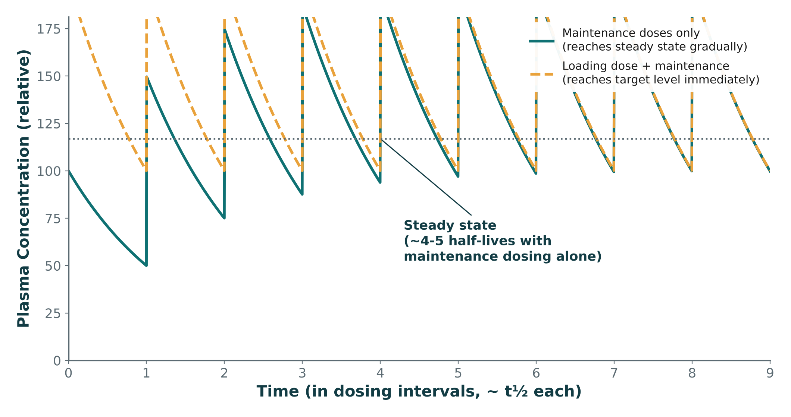
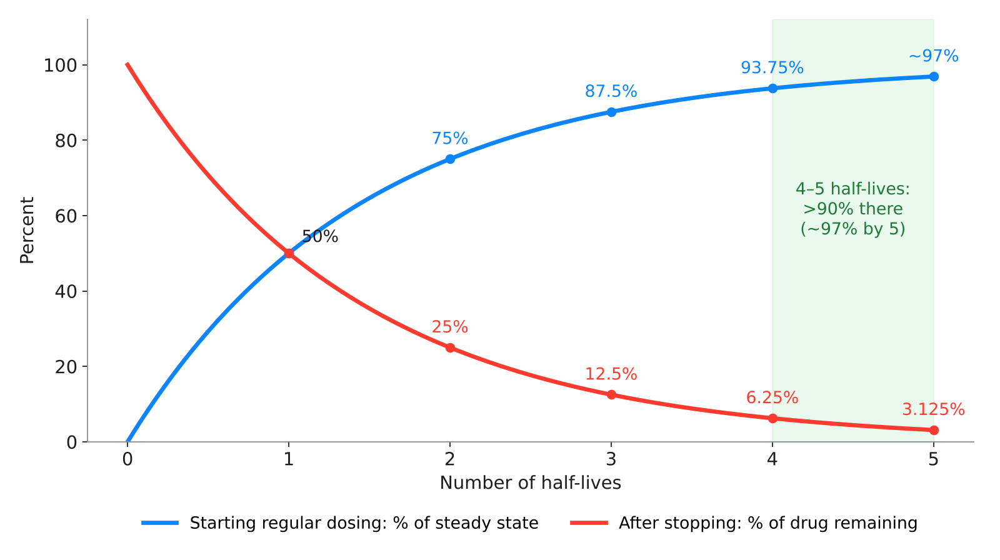

Open Sidekick (bottom right) to search, listen, drill flashcards, quiz, or chat about this lecture
The whole lecture in 6 sentences
Metabolism inactivates drugs, activates prodrugs, or makes active or toxic metabolites (e.g., NAPQI); Phase I (CYP450 oxidation, reduction, hydrolysis) functionalizes and Phase II conjugates for excretion.S4; S4 (notes); S5Part 1 →
A CYP inhibitor raises a substrate's level (toxicity) and an inducer lowers it (therapeutic failure) — always check CYP450 interactions before adding a drug.S6; S7 (notes); S40Part 1 →
The kidney is the main elimination route — filtration of free drug, active secretion, reabsorption of lipophilic un-ionized drug — and less renal function means less clearance and more exposure.S13; S14; S15Part 2 →
Half-life (time for concentration to fall 50%) depends on clearance and Vd: ~4–5 half-lives to steady state and ~97% eliminated after ~5.S19; S23Part 3 →
Loading doses (based on Vd) reach the target immediately; maintenance doses (based on clearance) keep levels in range; in CKD adjust dose and/or interval by eGFR/CrCl.S23; S23 (notes); S28Part 3 →
Pharmacogenomic variants (CYP2D6, CYP2C19, TPMT, HLA-B*5801) change drug response, but genotype is one input in a checklist of indication, contraindications, organ function, interactions, patient factors, and dose/route/monitoring.S33; S34; S39Part 4 →
Learning objectives
IO = syllabus unit objective · SO = this session's objectives slide.
ID
Objective
Covered in
IO1.1
Define and describe fundamental pharmacologic concepts, including pharmacokinetics, pharmacodynamics, drug-receptor interactions, dose-response relationships, therapeutic index, half-life, and steady state.
Explain how patient-specific factors, including age, pregnancy, renal and hepatic function, and pharmacogenetic variation, may affect medication response.
⚠ Age and pregnancy are only named in the prescribing checklist
Session 2 of 2 on Introduction to Pharmacology (Thursday, October 22): metabolism, excretion, PK calculations, pharmacogenomics & clinical integration.S1
Recap: Session 1 covered pharmacology vocabulary, drug development, pharmacodynamics, dose-response relationships, and ADME through distribution. Today picks up with metabolism (Section 6) and runs through the integrated clinical framework and recall quiz.S2; S2 (notes)
The Lecture Recall Quiz is a cumulative self-test covering both sessions — a standalone recall resource, separate from the in-lecture quick checks; revisit it on your own before the exam. (Rebuilt here as practice questions.)S45; S48 (notes)
Original figures in this deck: Figures 6–8 (CYP450 inhibition vs. induction; exponential decay over half-lives; reaching steady state with and without a loading dose) were generated by the course director using the AI tool Claude to illustrate standard, non-copyrighted pharmacologic concepts — original diagrams, not reproduced from Katzung or any other copyrighted source. Reference: Anthropic. (2026). Claude (Sonnet 5) [Large language model]. https://claude.aiS49; S49 (notes)
Slide discrepancies
Time to steady state: slides say ~4–5 half-lives; the textbook's rule of thumb is four half-lives (over 90% of steady state). These agree — the textbook just rounds down.S23; p. 47
1Part 1 · Topic
Drug Metabolism & CYP450 Interactions
SO1IO1.2IO1.4
Key definitions
Drug metabolism = how the body chemically transforms drugs.S3
Phase I — Functionalization: oxidation, reduction, hydrolysis.S5
Phase II — Conjugation: glucuronidation, sulfation, acetylation, methylation, glutathione conjugation.S5
Enzyme inhibition: a drug slows a CYP enzyme, raising the blood level of any drug that CYP normally clears.S6; SG U1-R10
Enzyme induction: a drug increases CYP enzyme production, lowering the blood level (and effect) of drugs that CYP clears.S6; SG U1-R10
How it works
Why metabolize? To inactivate an active drug, making it easier to excrete.S4
To activate a prodrug into its active form.S4
To produce an active metabolite that contributes to (or extends) the drug effect.S4
Occasionally to produce a toxic metabolite — the basis of some drug-induced organ injury.S4
Phase I is primarily carried out by cytochrome P450 (CYP450) enzymes and often creates or unmasks a reactive functional group.S5
Phase II attaches a polar group to the molecule, producing a more water-soluble product for renal/biliary excretion.S5
Phase I often comes before Phase II, but not always — some drugs go straight to conjugation.S5 (notes)
TBCYP3A4 alone metabolizes over 50% of the prescription drugs metabolized by the liver.p. 60
TBAcetaminophen is mostly conjugated (glucuronide/sulfate); in overdose glutathione is depleted and the toxic metabolite (NAPQI) injures the liver — N-acetylcysteine given within 8–16 hours protects against fulminant hepatotoxicity.p. 66
Drugs named as examples
NAPQI (from acetaminophen) is the textbook example of a toxic metabolite produced by normal Phase I metabolism — previewing the acetaminophen toxicity lecture.S4 (notes)
CYP3A4 — the enzyme in the lecture's inhibitor/substrate example.S6
TBInducers: rifampin, carbamazepine, phenytoin, barbiturates, St. John's wort; inhibitors: ketoconazole, clarithromycin/erythromycin, ritonavir, grapefruit juice.p. 63; p. 64
TBSt. John's wort induces CYP3A4 and speeds metabolism of oral contraceptives, warfarin, cyclosporine, and others.p. 72
Clinical
CYP450 interactions are one of the highest-yield concepts in all of pharmacology — nearly every major drug class has at least one clinically important CYP interaction.S6 (notes)
Example: Drug A inhibits CYP3A4 → Drug B (a CYP3A4 substrate) accumulates → toxicity risk rises.S6; SG U1-R10
Inhibition pushes a substrate's level ABOVE 100% of baseline (toxicity risk); induction pushes it BELOW 100% (therapeutic-failure risk).S7 (notes)
Inhibiting the CYP that clears a substrate is especially dangerous when the substrate has a narrow therapeutic index.S11
Enzyme induction speeds substrate clearance, lowering its level and effect — the opposite of inhibition.S48
TBLiver disease (e.g., cirrhosis, hepatitis) slows metabolism of some drugs enough that ordinary doses can cause coma.p. 73
TBSevere ADRs contribute to about 100,000 US deaths a year and about 7% of hospital admissions.p. 71
Trap
Inhibitor → substrate level UP (toxicity); inducer → substrate level DOWN (therapeutic failure). Don't swap them.S7 (notes); S9
CYP3A4 is a Phase I (CYP450) enzyme — it does not "only affect Phase II metabolism."S5; S10-11
Not every drug goes through Phase I first — some go straight to Phase II conjugation.S5 (notes)
Step by step
Two phases of metabolismS5
Drug→Phase I — functionalization (CYP450)→Phase II — conjugation (adds polar group)→More water-soluble product→Renal/biliary excretion
CYP inhibitionS6; S8
Drug A inhibits CYP3A4→Drug B (CYP3A4 substrate) cleared more slowly→Drug B accumulates (Figure 6: 240%)→Toxicity risk ↑
More water-soluble product for renal/biliary excretion
Order
Often first — but not always
Some drugs go straight here
How to tell them apart. Sources: S5; S5 (notes)
CYP450 inhibition vs. induction
Enzyme inhibition
Enzyme induction
What happens to the CYP enzyme
Slowed
More enzyme produced
Substrate drug's blood level
Rises (Figure 6: 240%)
Falls (Figure 6: 42%)
Clinical risk
Toxicity
Therapeutic failure
Worst case
Narrow-TI substrate
Not covered in materials
How to tell them apart. Sources: S6; S7 (notes); S8-9; S11
Why it happens
Why does an inhibitor cause toxicity? The CYP enzyme that normally clears the substrate is slowed, so the substrate can no longer be cleared normally and accumulates.S6; S9
Why does Phase II help excretion? Attaching a polar group makes the drug more water-soluble, so it can leave in urine or bile.S5
Mnemonic (memory aid)
INhibitor = level goes INto the danger zone (↑, toxicity). InDUcer = level goes Down (↓, failure).S6; S7 (notes)
Phase I = Initial change (oxidize, reduce, hydrolyze — CYP450). Phase II = Tag it (conjugate a polar group → water-soluble).S5
eGFR and creatinine clearance (CrCl) are the standard bedside estimates of renal function used to adjust dosing.S15
Any renally-cleared, narrow-therapeutic-index drug (think: many antibiotics, digoxin, lithium) needs a dose or interval adjustment in renal impairment.S15
For a primarily renally eliminated drug when eGFR drops: decrease the dose and/or extend the dosing interval, guided by eGFR/CrCl.S16-17
Urine pH manipulation (e.g., alkalinizing urine in aspirin overdose) works by trapping ionized drug in the tubule, blocking reabsorption.S14 (notes)
This is the PK foundation for the renal-impairment case and the NSAID-in-CKD case later.S15 (notes)
Trap
Only FREE (unbound) drug is filtered at the glomerulus.S14
Reabsorption REDUCES net elimination — and only lipophilic, un-ionized drug is reabsorbed.S14
Renal impairment → lower dose and/or longer interval — NOT "no adjustment," a higher dose, or "IV only."S16-17
Step by step
Renal handling of a drugS14
Free drug filtered at glomerulus (by size)→Transporters secrete more into tubule→Lipophilic, un-ionized drug reabsorbed→Remainder eliminated in urine
Three renal processes
Process
Direction
How
Which drug
Glomerular filtration
Blood → tubule
Based on molecular size
Free (unbound) drug
Tubular secretion
Blood → tubule
Active transporters
Additional drug
Tubular reabsorption
Tubule → blood
Passive diffusion — reduces net elimination
Lipophilic, un-ionized drug
How to tell them apart. Sources: S14
Routes of drug elimination
Route
Importance
Example / who it matters for
Kidney
Dominant for most drugs and metabolites
Not covered in materials
Bile / feces
Important for some
Large or protein-bound drugs
Lungs
Specific agents
Volatile agents (anesthetic gases)
Sweat / breast milk
Minor
Breast milk matters for lactating patients
How to tell them apart. Sources: S13
Why it happens
Why does alkalinizing urine help in aspirin overdose? It keeps the drug ionized in the tubule, and only un-ionized drug can diffuse back — so reabsorption is blocked and more drug leaves.S14; S14 (notes)
Why adjust doses in CKD? Less renal function → less clearance → more exposure and accumulation of renally-cleared drugs.S15
Mnemonic (memory aid)
Kidney handling = "Filter, Secrete, Reabsorb" — Free drug filtered, Secreted by transporters, Reabsorbed if lipophilic & un-ionized.S14
↓ renal function → ↓ clearance → ↑ exposure → lower dose and/or longer interval, guided by eGFR/CrCl.S15; S17
Renally cleared narrow-TI drugs: many antibiotics, digoxin, lithium.S15
3Part 3 · Topic
PK Calculations: Half-Life, Steady State & Clearance
SO3IO1.1IO1.3
Key definitions
Half-life (t½) = the time required for the plasma drug concentration to fall by 50%.S19
Steady state: the point at which drug intake equals drug elimination; reached in about 4–5 half-lives with regular dosing.S23; SG U1-R11
Loading dose: a larger initial dose used to rapidly reach a therapeutic concentration, without waiting for steady state.S23
Maintenance dose: the regular, ongoing dose that keeps the drug within the therapeutic range once steady state is reached.S23
Clearance = the volume of plasma from which drug is completely removed per unit time.S27
TBt½ = 0.7 × Vd / CL — half-life rises when Vd rises or clearance falls.p. 56
TBLoading dose = Vd × target concentration (e.g., theophylline: 35 L × 10 mg/L = 350 mg for a 70-kg adult).p. 52
How it works
PK calculations = the math PAs actually use at the bedside.S18
Half-life is determined by clearance and volume of distribution together — it is not a fixed drug "property" independent of physiology.S19
A drug is roughly 97% eliminated after about 5 half-lives.S19; SG U1-R11
Formula: % remaining = 100% x (1/2)^(number of half-life) — i.e., per number of half-lives elapsed.S19
Formula: C(t) = C₀ x (1/2)^(t/t½) — C₀ = starting concentration, t = time elapsed.S19
Worked example (both formulas): t½ = 6 h; an IV dose gives a starting plasma concentration of 100 mg/L — see the table for each half-life.S19
Clearance determines how efficiently a drug is removed — and, along with Vd, determines half-life.S27
Total clearance is usually the sum of hepatic and renal clearance.S27
Loading doses are based on Vd; maintenance doses are based on clearance.S23 (notes)
Steady state takes ~4–5 half-lives regardless of dose size — the same reason a drug is ~97% eliminated ~5 half-lives after stopping it.S30
Time to steady state (about 4–5 half-lives) is governed by half-life.S48
TBDuring regular dosing: 50% of steady state after 1 half-life, 75% after 2, and over 90% after 4 — the textbook's "four half-lives" rule of thumb.p. 47
TBIf the dosing interval is shorter than four half-lives, accumulation will be detectable.p. 48
TBCapacity-limited (saturable) elimination: clearance falls as concentration rises — important for phenytoin, ethanol, and aspirin.p. 47
Drugs named as examples
Not covered in materials — this section uses illustrative drugs ("a drug with a half-life of 6 hours").S19
Clinical
Case: significant CKD + a medication primarily eliminated unchanged by the kidney. What happens to the drug's concentration and half-life, and would you adjust the dose, the dosing interval, or both?S28
Clinical pearl: reduced clearance raises drug concentration and prolongs half-life; many renally-cleared drugs are managed by extending the dosing interval, reducing the dose, or both, guided by eGFR/CrCl.S28
The logic chain: clearance ↓ → half-life ↑ → time to steady state ↑ → accumulation risk ↑ if the regimen is not adjusted.S28 (notes)
Reduced renal clearance raises both drug concentration and half-life.S48
A loading dose reaches the therapeutic target immediately instead of waiting ~4–5 half-lives; it does not change the maintenance dose or remove the need for monitoring.S26
Trap
After 3 half-lives, 12.5% REMAINS (87.5% eliminated) — read whether the question asks remaining or eliminated.S19; S22
Time to steady state depends on half-life — not on dose size, bioavailability, or route.S30; S48
Half-life is not a fixed property — it changes with clearance and Vd (e.g., in renal impairment).S19; S28
A loading dose does NOT permanently lower the maintenance dose or eliminate monitoring.S26
Step by step
Renal impairment logic chainS28 (notes)
Clearance ↓→Half-life ↑→Time to steady state ↑→Accumulation risk ↑ (if regimen not adjusted)
Figure 7 · Exponential decay over half-lives. Original illustrative decay curve: plasma concentration falls by 50% with each half-life, leaving ~3% remaining after 5 half-lives.S20

Figure 8 · Steady state with and without a loading dose. Original illustrative multi-dose simulation: maintenance dosing alone climbs gradually (a sawtooth climb) to steady state; adding a loading dose reaches the target level immediately, right from the first dose.S24; S24 (notes)

TBTextbook concept · Five to fill, five to empty. Original diagram: starting regular dosing, each half-life closes half of the remaining gap to steady state (50 → 75 → 87.5 → 93.75 → ~97%); after stopping, each half-life removes half of what remains (50 → 25 → 12.5 → 6.25 → 3.125%). The same 4–5 half-lives govern both.S19; S23; p. 47
Half-life worked example (t½ = 6 h, start 100 mg/L)
Half-lives
Time
Concentration
% remaining
% eliminated
1
6 h
50 mg/L
50%
50%
2
12 h
25 mg/L
25%
75%
3
18 h
12.5 mg/L
12.5%
87.5%
4
24 h
6.25 mg/L
6.25%
93.75%
5
30 h
3.125 mg/L
3.125%
~97%
How to tell them apart. Sources: S19
Loading dose vs. maintenance dose
Loading dose
Maintenance dose
Purpose
Reach therapeutic concentration rapidly
Keep the drug in the therapeutic range
Size / timing
Larger, initial
Regular, ongoing
Based on
Vd
Clearance
On Figure 8
Starts at target immediately
Sawtooth climb over ~4–5 half-lives
How to tell them apart. Sources: S23; S23 (notes); S24 (notes)
Why it happens
Why does CKD prolong half-life? Half-life depends on clearance (with Vd) — less renal clearance means the concentration takes longer to fall by 50%, so the drug accumulates.S19; S27; S28 (notes)
Why does a loading dose skip the wait? It is a larger first dose that reaches the therapeutic concentration right away instead of building up over ~4–5 half-lives.S23; S26
Mnemonic (memory aid)
"Five to fill, five to empty": ~4–5 half-lives to reach steady state; ~5 half-lives to be ~97% eliminated.S19; S23; S30
Loading → Liters (Vd). Maintenance → Moving out (clearance).S23 (notes)
High-yield
t½ = time for plasma concentration to fall 50%; set by clearance + Vd.S19
Each t½ halves what remains: 50 → 25 → 12.5 → 6.25 → ~3% (~97% eliminated at 5 t½).S19; S22
Steady state ≈ 4–5 t½, regardless of dose; loading dose gets there immediately.S23; S26; S30
Clearance = plasma volume cleared per unit time; total = hepatic + renal.S27
Pharmacogenomics studies how genetic variation changes an individual's response to a drug.S32
Why the same dose does not work the same way in everyone.S31
How it works
Genetic variation can alter drug metabolism (e.g., CYP enzyme activity).S32
It can alter drug transport across membranes.S32
It can alter drug target structure or expression.S32
It can alter overall drug response and risk of adverse reactions.S32
Personalized pharmacotherapy combines genotype, phenotype, disease state, and other medications into individualized therapy.S34
Pharmacogenomics is one input among several — genotype alone never dictates therapy in isolation.S34
TBCodeine is converted to morphine (200× more potent) by CYP2D6; CPIC recommends an alternative analgesic for CYP2D6 poor and ultrarapid metabolizers.p. 81; p. 83
TBClopidogrel: about 85% of a dose is inactivated by esterases; CYP2C19 activates the rest. CYP2C19 poor/intermediate metabolizers → prasugrel or ticagrelor.p. 81; p. 82
TBTPMT intermediate activity: start thiopurines at 30–70% of the target dose; deficient: use a drastically reduced dose or an alternative.p. 83
TBWarfarin dose varies up to 20-fold between patients; CYP2C9 and VKORC1 genotypes explain much of it.p. 90
TBCYP2D6 metabolizes up to one-quarter of clinically used drugs (β blockers, antidepressants, antipsychotics, opioids).p. 78
TBCYP2D6 ultrarapid metabolizers: up to one-third of Ethiopians and Saudi Arabians; CYP2C19 poor metabolizers: 3–5% of Caucasians, 18–23% of Japanese.p. 67
TBHLA-B*57:01 → abacavir hypersensitivity; G6PD deficiency → rasburicase contraindicated; slow NAT2 acetylators (~50% in the USA) → isoniazid toxicity.p. 70; p. 83; p. 88
Clinical
CYP2D6 variation alters metabolism of many antidepressants and opioids (e.g., codeine activation).S33; SG U1-R12
CYP2C19 variation affects clopidogrel activation and some antidepressant/PPI dosing.S33
Certain HLA alleles sharply raise the risk of severe hypersensitivity to specific drugs.S33
HLA-B*5801 is associated with severe hypersensitivity reactions to allopurinol — a textbook pharmacogenomic screening consideration (seen again in the gout lecture).S36; S33 (notes); SG U1-R12
Trap
HLA-B*5801 before allopurinol = severe hypersensitivity risk — not absorption, not taste, and not irrelevant to drug selection.S35-36
Genotype is one input — never the sole basis for therapy.S34
Step by step
TBCodeine and CYP2D6 (textbook)p. 81; p. 82
Codeine (prodrug)→CYP2D6 → morphine (200× more potent)→Poor metabolizer: little morphine → poor pain relief→Ultrarapid: too much morphine → toxicity→CPIC: alternative analgesic for PM and UM
TBClopidogrel and CYP2C19 (textbook)p. 81; p. 82
Clopidogrel (prodrug)→~85% inactivated by esterases→CYP2C19 makes the active metabolite→Poor/intermediate metabolizer: less active drug → more stent thrombosis after PCI→CPIC: prasugrel or ticagrelor instead
Pharmacogenomics in practice
Variant
What it changes
Drugs named
CYP2D6 variation
Metabolism (incl. codeine activation)
Many antidepressants, opioids (codeine)
CYP2C19 variation
Activation / dosing
Clopidogrel; some antidepressants, PPIs
TPMT deficiency
↑ Toxicity risk
Thiopurines (azathioprine)
HLA alleles (HLA-B*5801)
↑↑ Severe hypersensitivity risk
Allopurinol
How to tell them apart. Sources: S33; S36
Why it happens
Why can a CYP2D6 variant change codeine's effect? Codeine needs CYP2D6 activation — change the enzyme's activity and you change how much active drug is made.S32; S33
From concepts to clinical decisions: one integrated pharmacology pathway — Dose → Absorption → Distribution → Receptor / Target → Effect, with Metabolism and Excretion clearing the drug.S37; S38
Every topic in this lecture is a stop somewhere along this pathway — use it as your mental checklist when you evaluate any drug.S38
How it works
Before you prescribe — the clinical decision-making checklist: Indication — is there a clear reason to treat?S39
Contraindications and allergies.S39
Renal and hepatic function.S39
Drug interactions (including CYP450).S39
Age, pregnancy, and other patient-specific factors.S39
Correct dose, route, and monitoring plan.S39
Memorize this list — it is exactly the checklist applied in the MSK cases (NSAID in CKD, methotrexate in pregnancy, etc.).S39 (notes)
Drugs named as examples
Not covered in materials — the integrated vignettes use unnamed drugs ("a CYP3A4-substrate medication," "a home medication").S40; S41
Clinical
CYP interaction in action: a patient stable on a CYP3A4-substrate medication starts a potent CYP3A4 inhibitor. What happens to the first drug's level, and what would you watch for clinically?S40
Clinical pearl: always check for CYP450 interactions before adding a new drug to an existing regimen — one of the most preventable causes of toxicity.S40; S43
Agonist or antagonist? A new drug binds the same receptor as a home medication, and the home medication's effect weakens. Is the new drug most likely a competitive antagonist, and how could you confirm it pharmacologically?S41
Clinical pearl: a competitive antagonist can be overcome by increasing the agonist dose — if raising the home medication's dose restores the effect, that supports competitive (rather than irreversible) antagonism.S41
SGStudy-guide case: 68-year-old woman, stage 4 CKD (eGFR 24 mL/min), starting a narrow-TI oral antiarrhythmic eliminated mainly unchanged by the kidney; she started a strong CYP3A4 inhibitor 3 weeks ago.SG U1-S
SGTwo concerns: reduced renal clearance from CKD will raise the antiarrhythmic's concentration and prolong its half-life regardless of the new drug; separately, if it has any hepatic/CYP3A4 component, the CYP3A4 inhibitor would compound accumulation further.SG U1-S
SGBefore dispensing: check eGFR/CrCl, consider a lower dose or extended interval, and closely monitor renal function and signs of toxicity (arrhythmia worsening, other drug-specific toxicity) after starting.SG U1-S
SGIf the drug were instead cleared by the liver via CYP3A4: the direct renal-clearance concern becomes less central (though CKD can still indirectly affect hepatic drug handling), and the CYP3A4 interaction becomes the dominant concern.SG U1-S
Trap
The single check most aimed at preventing a toxic, predictable drug-drug interaction is reviewing CYP450 interactions — not brand name, chemical name, or half-life alone.S42-43
Weaker home-medication effect + restored by a higher dose = competitive; not restored = irreversible.S41
Reviewing indication, contraindications, renal/hepatic function, interactions, and monitoring = the clinical decision-making framework — not pharmacogenomic testing or Phase IV surveillance.S47-48
Why check CYP450 before adding any drug? An inhibitor added to a stable regimen raises the other drug's level — predictable, so it is one of the most preventable causes of toxicity.S6; S40
Mnemonic (memory aid)
Checklist "I C R I A D": Indication · Contraindications/allergies · Renal/hepatic · Interactions (CYP450) · Age/pregnancy · Dose, route, monitoring.S39
Review CYP450 interactions with current medicationsS43
t½ formula
t½ = 0.7 × Vd / CLp. 56
Loading dose formula
Vd × target concentrationp. 52
% of steady state
1 t½ = 50% · 2 = 75% · 4 = >90%p. 47
Saturable elimination
Phenytoin, ethanol, aspirinp. 47
CYP3A4 share
>50% of liver-metabolized prescription drugsp. 60
Acetaminophen antidote
N-acetylcysteine within 8–16 hp. 66
CYP2C19 PM on clopidogrel
Switch to prasugrel or ticagrelorp. 82
HLA-B*57:01
Abacavir hypersensitivityp. 88
Self-test
First, the lecture's own 14 knowledge checks — exactly as written. Then original PANCE-style questions. Tap an answer to reveal the explanation.
From the lecture
Lecture check 1 · S8-9
In Figure 6, the "+ Enzyme inhibitor" bar rises to 240% of baseline, while the "+ Enzyme inducer" bar falls to 42%. For a patient on a stable dose of the substrate drug, which condition poses the greatest risk of toxicity?
Answer: D
The tallest bar in the chart is the enzyme-inhibitor condition at 240% of baseline — the substrate drug accumulates because it can no longer be cleared normally, raising toxicity risk. The inducer bar shows the opposite problem (42%, risking therapeutic failure), not toxicity.S8-9
A patient stable on a CYP3A4-substrate medication with a narrow therapeutic index is started on a new drug that is a strong CYP3A4 inhibitor. What is the most likely consequence?
Answer: C
Inhibiting the CYP enzyme responsible for clearing the substrate drug slows its metabolism, raising its blood level — especially dangerous when the substrate has a narrow therapeutic index.S10-11
A patient’s eGFR drops significantly due to new chronic kidney disease. For a drug that is primarily renally eliminated, what dosing adjustment is most appropriate?
Answer: D
Reduced renal clearance raises drug exposure for renally-eliminated drugs; the standard response is a lower dose, a longer interval, or both, guided by eGFR/CrCl.S16-17
Using Figure 7, approximately what percentage of the original drug concentration remains after 3 half-lives (3 t½)?
Answer: C
Each half-life cuts the remaining concentration in half: 100% → 50% (1 t½) → 25% (2 t½) → 12.5% (3 t½), exactly as marked on the curve. By 5 half-lives the drug is roughly 97% eliminated (about 3% remaining).S21-22
In Figure 8, the dashed orange line (loading dose + maintenance) starts at the target concentration immediately, while the solid teal line (maintenance only) climbs gradually over several doses. What is the clinical advantage of adding a loading dose?
Answer: D
The dashed loading-dose curve starts at the dotted steady-state line from the very first dose, while the solid maintenance-only curve needs several dosing intervals (~4–5 half-lives) to climb to that same level — exactly as defined on the previous slide. A loading dose does not change the maintenance dose itself or remove the need for monitoring.S25-26
Approximately how many half-lives are required for a drug to reach steady state with regular, repeated dosing?
Answer: B
Steady state — where drug intake equals drug elimination — is reached in roughly 4–5 half-lives, regardless of dose size. This is also why a drug is roughly 97% eliminated about 5 half-lives after stopping it.S29-30
A patient is found to carry the HLA-B*5801 allele before starting allopurinol. Why does this matter clinically?
Answer: A
HLA-B*5801 is associated with severe hypersensitivity reactions to allopurinol — a textbook pharmacogenomic screening consideration you will see again in Thursday’s gout lecture.S35-36
Before prescribing any new medication, which single check is most directly aimed at preventing a toxic, often-predictable drug-drug interaction?
Answer: D
CYP450 interaction screening is one of the single highest-yield steps for preventing predictable, preventable toxicity before adding any new drug to a regimen.S42-43
A drug has high potency but low efficacy compared to an alternative. For a patient needing maximum symptom relief, which factor matters more when choosing between the two?
Answer: A
Efficacy (the maximum achievable effect) matters more than potency for most clinical outcomes.S46; S48
A narrow-therapeutic-index medication requires monitoring. Which pharmacokinetic parameter most directly determines how long it takes to reach steady-state concentration?
Answer: A
Time to steady state (about 4–5 half-lives) is governed by half-life.S47; S48
A PA reviews indication, contraindications, renal/hepatic function, interactions, and a monitoring plan before prescribing. This process best reflects:
Answer: C
This checklist is the clinical decision-making framework from the "Putting It All Together" section.S47; S48
Q1 · Mechanism · Drug Metabolism & CYP450 Interactions
A drug undergoes glucuronidation, which attaches a polar group to the molecule. Which statement best describes this step?
Answer: A
Glucuronidation is a Phase II (conjugation) reaction that attaches a polar group, producing a more water-soluble product for renal/biliary excretion (S5).S5
B. Oxidation is Phase I; glucuronidation is Phase II conjugation (S5).
C. Hydrolysis is Phase I, and Phase I does not always come first (S5, S5 notes).
D. Phase II produces a more water-soluble (polar) product (S5).
Q2 · Clinical vignette · Drug Metabolism & CYP450 Interactions
A 19-year-old arrives 6 hours after a large intentional acetaminophen ingestion. Labs are pending. Which treatment best protects against fulminant liver injury?
Answer: B
N-acetylcysteine given within 8–16 hours protects against acetaminophen hepatotoxicity by replacing depleted glutathione (p. 66).p. 66
A. Urine alkalinization is used for aspirin overdose, a weak acid (p. 20).
C. Protamine neutralizes heparin (p. 26), not acetaminophen.
D. Induction would increase toxic metabolite formation, not protect the liver (p. 66).
E. The protective window is 8–16 hours, so delay risks liver failure (p. 66).
Q3 · Clinical vignette · Drug Excretion & Renal Dosing
A patient arrives after an aspirin overdose, and the team alkalinizes the urine. How does this increase elimination of the drug?
Answer: A
Urine pH manipulation works by trapping ionized drug in the tubule, blocking reabsorption (S14 notes); only lipophilic, un-ionized drug is reabsorbed (S14).S14; S14 (notes)
B. Secretion uses active transporters (S14), but urine pH works by blocking reabsorption (S14 notes).
C. The mechanism acts in the renal tubule (S14 notes).
D. Only free (unbound) drug is filtered (S14).
E. Lipophilic, un-ionized drug is reabsorbed — the opposite of the goal (S14).
A patient receives an IV dose that gives a starting plasma concentration of 100 mg/L. The drug's half-life is 6 hours. What is the plasma concentration at 18 hours?
Q11 · Clinical vignette · Putting It All Together: Clinical Decision-Making
A patient starts a new drug that binds the same receptor as their home medication, and the home medication's effect becomes weaker. Raising the home medication's dose restores the full effect. What does this support?
Answer: C
A competitive antagonist can be overcome by increasing the agonist dose — restoring the effect supports competitive rather than irreversible antagonism (S41).S41
A. A weaker effect restored by a higher dose points to competition (S41).
B. A drug that weakens the home medication's effect is acting as an antagonist (S41).
D. Irreversible antagonism would NOT be overcome by raising the dose (S41).
E. Nothing here involves CYP metabolism; it's receptor competition (S41).
Q12 · Clinical vignette · Putting It All Together: Clinical Decision-Making
A 68-year-old woman with stage 4 CKD (eGFR 24 mL/min) is starting a narrow-TI oral antiarrhythmic eliminated mainly unchanged by the kidney. Three weeks ago she began a strong CYP3A4 inhibitor. What is the best step before the prescription is filled?
Answer: E
Reduced renal clearance will raise the drug's concentration and prolong its half-life; before dispensing, check eGFR/CrCl, consider a lower dose or extended interval, and monitor renal function and toxicity (SG U1-S).SG U1-S; S15; S28
A. Intervals are EXTENDED in renal impairment; shortening raises accumulation (S17, S28).
B. CKD reduces renal clearance, raising concentration and half-life of renally-eliminated drugs (S15, SG U1-S).
C. Check eGFR/CrCl and adjust BEFORE dispensing, then monitor closely (SG U1-S).
D. A CYP3A4 inhibitor RAISES substrate levels (S6); induction lowers them.